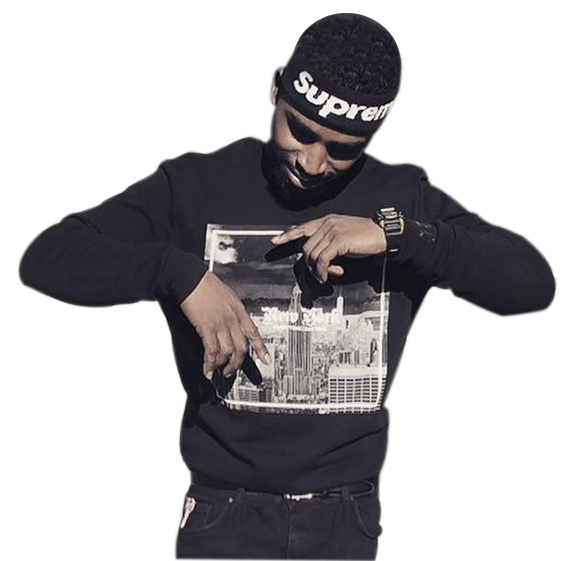

HURRICANE MATTHEWS
An IT guy turned rap superstar, Hurricane Matthews has been taking the southeast by storm with
hits like Creep Show, Matty Gigolo and his latest Billboard smash:
I Got Dreads Now. His debut album I Used to Get it in Ohio will be
available on all steaming platforms late 2019.

SCOOTA DOOTA
When he's not pushing dope on the block, you can catch Scoota Doota pushing carts at Publix
or even pushing his son in a stroller. This multitalented New York transplant blew up in Florida
after his viral video for Tell Me No caught the attention of Jay-Z and Drake, with
the latter even recording a remix to the song.
BRIAN HEFFNER
Probably the most versatile artist on the IDK roster, B Heff excels just as much as a producer
as an artist. His producer credits include top tier artists such as Gucci Mane, Playboy Carti,
Lil Uzi Vert and more. When he's not in front of the computer banging out some beats, he's in
front of the microphone singing the draws off of your daughter.
SMURF
Smurf is not only one of the first artists to sign with IDK, he also co-founded the label. His
popular underground mixtape Loner Life earned him offers from multiple major
labels. He turned them all down to stay independent and create his own way.